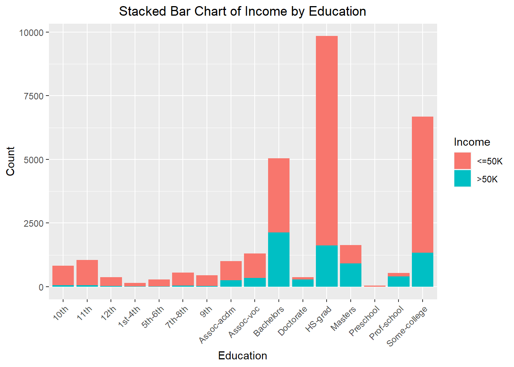
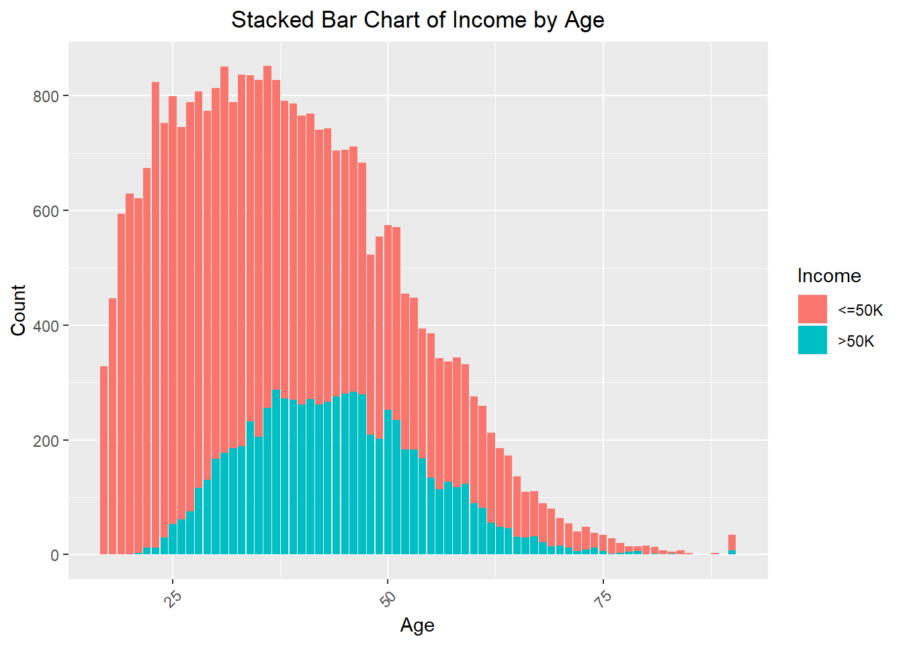
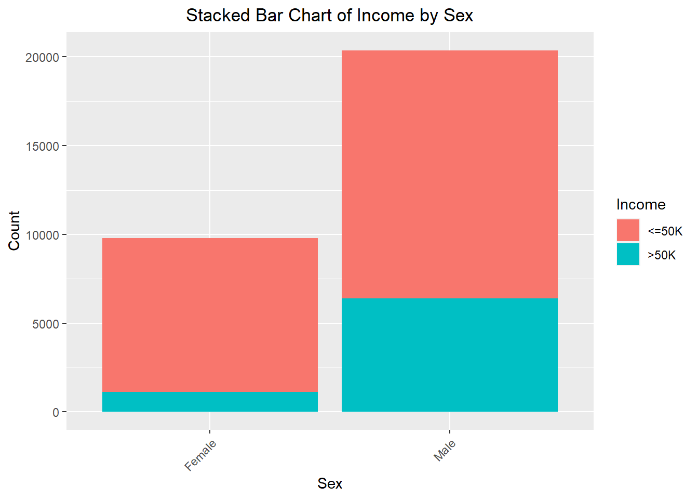
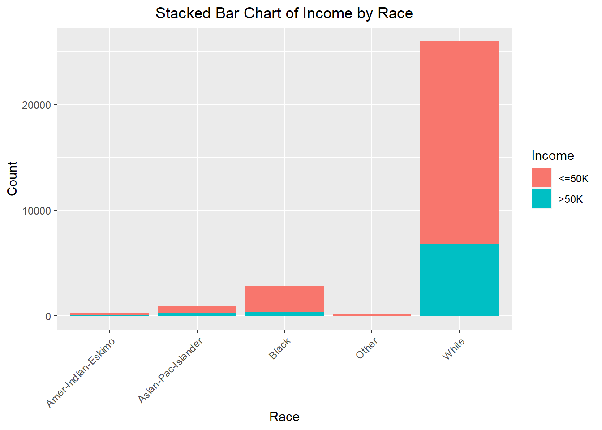
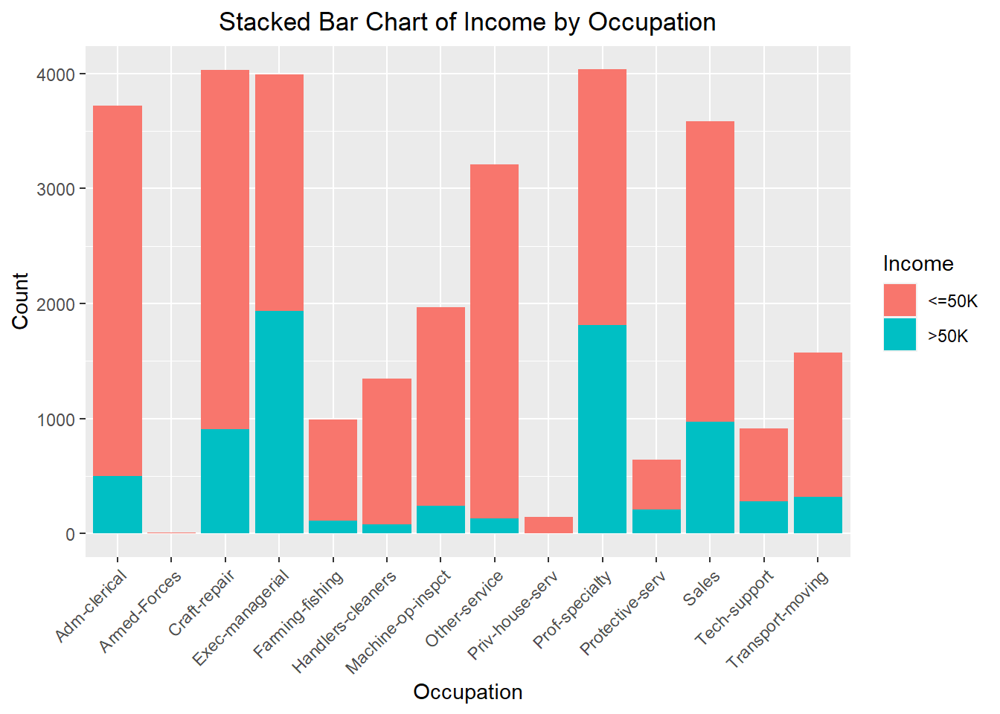

Found this dataset from University California of Irvine and wanted to try and be able to classify whether an Adult in the United States was able to have an income of over $50,000. This dataset was extracted in 1994 and as a result, if we adjust for inflation is $105,961. Perhaps now it may not be as useful to classify whether an Adult in the United States of an income greater $50,000 with these parameters but it may be insightful to find important details variable that may indicate a higher income individual
Data Cleaning
There are some null values in this dataset which I have decided to remove from the original dataset
Rows: 32561 Columns: 15
── Column specification ────────────────────────────────────────────────────────
Delimiter: ","
chr (9): workclass, education, marital_status, occupation, relationship, rac...
dbl (6): age, fnlwgt, education_num, capital_gain, capital_loss, hours_per_week
ℹ Use `spec()` to retrieve the full column specification for this data.
ℹ Specify the column types or set `show_col_types = FALSE` to quiet this message.
After removing the fnlwgt variable and removing all the null values, we reduced our dataset from 32,561 to 30,162. I have also made most of the variables that R originally rendered as characters into factors which will later be used to train the classifier.
Investigating the dataset
Since now we’ve cleaned it up of null values and correctly the data types. Let’s explore the dataset and see if we can find any interesting patterns





Although there are many interesting things we could find, I’ve highlighted some interesting ones I found We can see that in the Education and Income, higher educated people seem to be able to have a higher proportion of incomes greater than $50,000 same with age and age.
Creating the Model
After some digging around, we found that random forest seem to provide the best accuracy as well as simplicity for this data set.
The analysis of feature importance from the Random Forest model reveals that certain variables significantly influence the prediction of an individual’s income level. The most crucial feature is capital_gain, as evidenced by its highest MeanDecreaseAccuracy and MeanDecreaseGini values. This indicates that capital gains play a pivotal role in distinguishing high-income individuals from those earning less than $50K. Similarly, relationship and age also show high importance scores, suggesting that personal relationships and age are strong indicators of income. For instance, individuals in certain relationship categories, such as married couples, and those in specific age groups, particularly older adults, are more likely to have higher incomes.
Other notable features include occupation, education, and hours_per_week. The occupation and education level of an individual are critical in predicting their income, highlighting the impact of job roles and educational attainment on earning potential. For example, certain high-skilled occupations and advanced educational degrees correlate strongly with higher income levels. Additionally, the number of hours worked per week is a significant predictor, reflecting the direct relationship between work effort and income. Conversely, features like native_country and race have lower importance scores, indicating they contribute less to the model’s predictive power. This comprehensive feature importance analysis helps in understanding the key drivers of income disparity and can inform policy-making and targeted interventions to address income inequality.